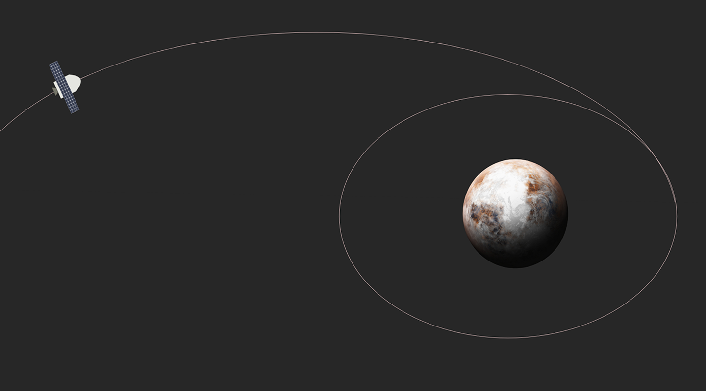
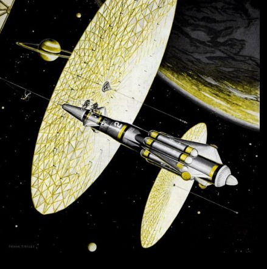
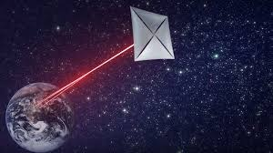
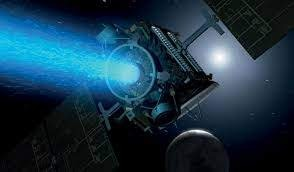
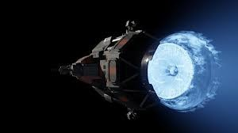
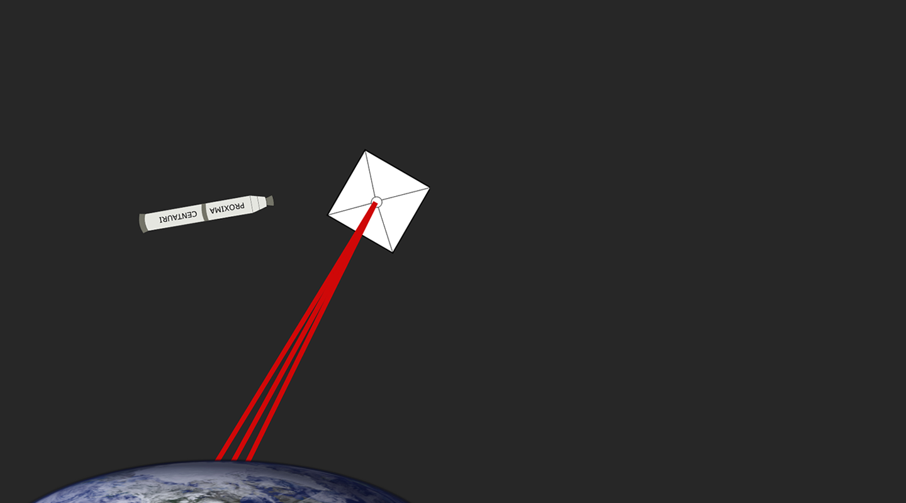

Sputnik 1 coasted around the Earth, being the first ever artificial satellite to orbit the Earth marked a revolutionary step in the Space Age but, just the beginning.
NASA's space shuttle was the world's first reusable spacecraft. NASA's Columbia orbiter launches skywards on April 12, 1981, on its first ever shuttle flight, STS-1.
Commanding the 54hour mission was astronaut Veteran John Young with then- rookie flyer Robert Crippen as a pilot.
So, Where are we heading towards ?

Planet : PROXIMA B
- Star: Proxima Centauri
- Distance From Eatrh: 4.25 Light Years
Lies in habitable zone and hence holds greater chance of bearing life forms.
And the journey begins…

6300 Years later ...

Wait something's not right, this satellite has reached Proxima B after 6300 years and that’s not what we will do every time….
And Scientist had figured out some of solutions which includes,

SOLAR SAILS

LASER
PROPULSION

ION
PROPULSION

FUSION
ENGINE
LASER
PROPULSION
LASER PROPULSION
Laser propulsion is a form of beam-powered propulsion where the energy source is a remote (usually ground-based) laser system and separate from the reaction mass. BREAKTHROUGH STARSHOT is one of the space project intending to use laser propulsion.

Around 20 Years Later...